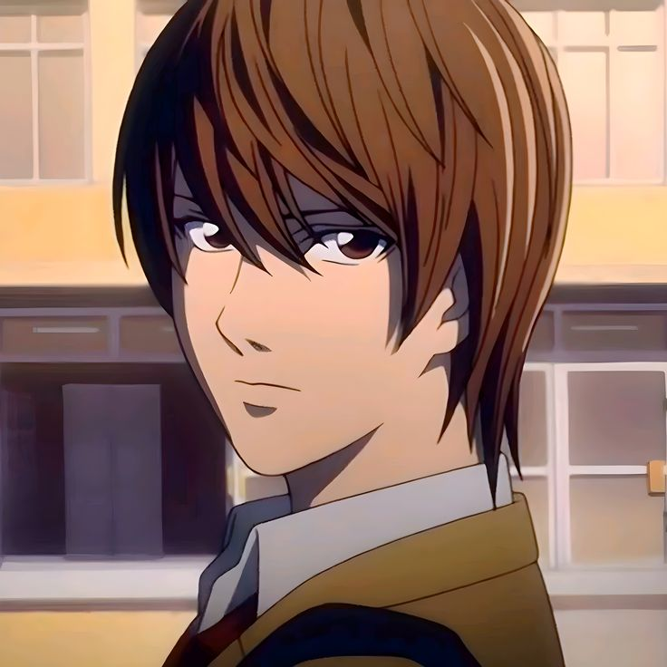
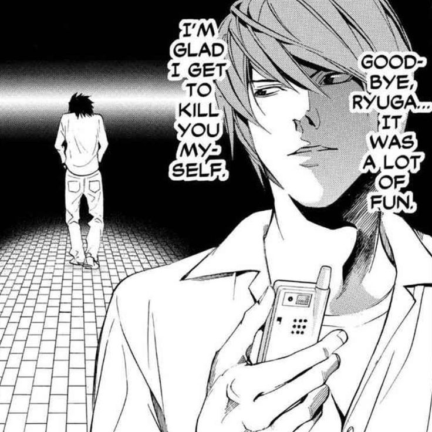
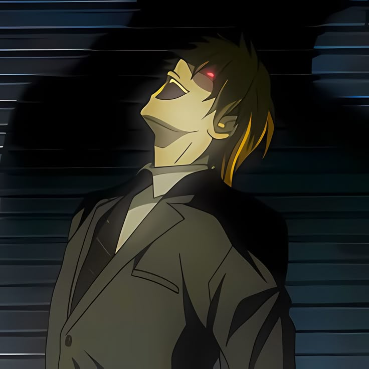
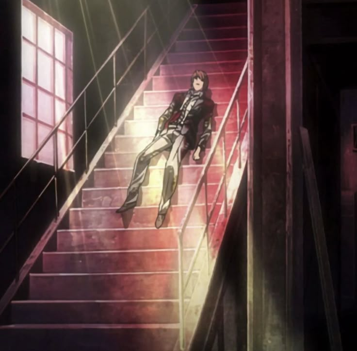

LIGHT YAGAMI
Light Yagami’s story is one of tragic brilliance and catastrophic moral decay—a transformation that is as mesmerizing as it is horrifying. Born a top student with sterling grades, an analytical mind, and strong convictions about justice, Light initially embodied the hope of a better world. Yet beneath the veneer of academic success and idealism lay a seething discontent with a society riddled with corruption. Light’s early life was marked by frustration over the systemic failures of the judicial system, which spurred a secret yearning to create a world where only the righteous could thrive. In his eyes, he was destined to become that rare arbiter of justice, a role he believed could only be filled by someone with his unique blend of intelligence and moral certainty.
DISCOVERY OF THE DEATH NOTE
That destiny would be irrevocably sealed when Light discovered the Death Note—a supernatural notebook that allowed him to kill anyone whose name was inscribed within its pages, so long as the face of the victim was imagined. At first, the notebook presented itself as a mysterious curiosity, but as Light experimented with its power, he saw an opportunity to reshape the world according to his own vision. Adopting the moniker "Kira" (a twist on the English word “killer”), he embarked on a crusade to systematically eliminate those he deemed unworthy of life. What began as a seemingly noble quest to rid the world of criminals quickly mutated into a vendetta where each act of murder was imbued with a fanatical belief in his self-appointed role as judge, jury, and executioner. With each life snuffed out, Light’s conviction grew, and the boundaries between his initial ideals and his descent into megalomania blurred irreparably. Light Yagami’s fateful encounter with the Shinigami Ryuk marked the inception of a dark crusade—one that would transform an idealistic, brilliant student into the remorseless executioner known as Kira. This encounter is not just a meeting of two disparate beings from different realms; rather, it was the catalytic moment when destiny and desire intertwined. Ryuk, a bored and amoral Shinigami seeking amusement in the human world, deliberately dropped the Death Note, a supernatural notebook with the power to command death, into the realm of mortals. For Light, whose acute sense of justice already found fault with society’s rampant corruption and moral decay, the discovery presented an irresistible opportunity. In that moment of electrifying realization, he saw in the Death Note not merely a tool for punishment but a means to create a utopia—a world cleansed of evil by his own hand.
KIRA
As the infamous Kira, Light’s actions escalated in both frequency and severity. His early experiments with the Death Note—targeting known criminals—soon gave way to a broader campaign of extrajudicial killings that extended far beyond the realm of lawful retribution. Light’s interventions were not always limited to those who had been proven guilty; he manipulated circumstances to eliminate any potential threat to his vision, regardless of their direct involvement in crime. Among his most chilling acts was the orchestration of murders where even indirectly implicated individuals, such as enemy investigators or unwitting bystanders like Naomi Misora, met grim fates. By eliminating foes before they could unravel his secret, Light not only protected his identity as Kira but also cemented his transformation from a justice-seeking idealist into an unrepentant, god-complex-obsessed executioner. In the early days following their encounter, the relationship between Light and Ryuk developed along a unique axis—one of detached amusement and mutual inevitability. Ryuk, with his dark humor and outsider’s perspective, became an unwilling yet fascinated chronicler of Light’s transformation. He observed, with a mixture of curiosity and idle excitement, how a man of brilliant promise could be seduced by absolute power. As Light began testing the limits of the Death Note, his initial murders were confined to known criminals—those whom society had already condemned. Yet, every time he scribbled a name in the notebook, his morality frayed a little more. Ryuk’s interjections, often laced with sardonic wit, served as both a reminder and a silent endorsement of Light’s growing hubris. The Shinigami’s presence underscored the surreal duality of the situation: while Ryuk remained an observer entertained by the unfolding spectacle, Light was increasingly absorbed in his mission to become the arbiter of life and death.
KIRA'S PHYLOSOPHY & MINDSET
Every strategic murder deepened Light’s descent. His megalomaniac transformation was characterized by a ruthless disregard for human life and a chilling willingness to sacrifice anyone who interfered with his plans. As he expanded his reign of terror, Light’s methods grew increasingly elaborate. He carefully manipulated events, using misdirection and psychological tactics to deflect suspicion from himself. His tactics ranged from eliminating law enforcement agents who posed a threat to his anonymity to systematically dismantling entire networks of power—such as the Yotsuba group—whose members could potentially expose him. In each case, Light’s cold logic and unyielding resolve allowed him to justify the collateral damage as an unfortunate but necessary price for achieving a purified society. As Kira, Light’s descent into darkness was marked by an ever-escalating series of calculated, impersonal murders that came to define his reign. With unparalleled precision, he crafted ingenious methods to eliminate those he deemed guilty of sin, corruption, or even mere opposition to his vision. The Death Note became an instrument of mass execution—a silent, inexorable force that enabled him to control fate with a few strokes of his pen. Each death not only removed a perceived blemish from society but also served as a stepping stone to further entrench his godlike self-image. His methods evolved gradually: from targeting low-level criminals to orchestrating the murder of influential figures, law enforcement agents, and even innocent bystanders caught in his calculated net. The sheer coldness and detachment with which Light approached each case highlighted the transformation of his ideals. What began as a misguided attempt at reform had transmogrified into a megalomaniacal crusade where the ends were used to justify ever more ruthless means.
BEYOND REDEMTION
Beyond the physical act of killing, one of Light’s most insidious crimes was the betrayal of the very ideals he once claimed to uphold. While his early actions might have been rationalized as a desperate bid to correct an unjust system, they inevitably spiraled into a personal crusade where his identity merged with his mission. His dealings with trusted allies like Misa Amane became tainted by manipulation and emotional exploitation; he exploited their loyalty and love to shelter his dark endeavors behind layers of deception. Moreover, his relentless pursuit of a crime-free utopia, fueled by his deluded self-importance, led him to disregard any semblance of due process or the sanctity of life, ultimately culminating in a moral tyranny where his judgment was absolute and unchallengeable. The brutality of Light’s campaign was compounded by his relentless pursuit of perfection and control. No life was exempt from his purifying justice if it threatened the delicate balance of his envisioned new world. For every meticulously planned hit, Light’s actions were characterized by a chilling disregard for human fragility and the unpredictability of fate. The systematic murders often involved elaborate strategies designed to deflect suspicion—instigating a cat-and-mouse game with law enforcement led by brilliant minds like L. As his confidence grew, so too did his ambition, stretching the boundaries of what could be justified by his warped moral compass. Each murder was a thread in the tapestry of his transformation, weaving together a narrative of corruption, the seduction of absolute power, and the ultimate subversion of the justice he once held dear.
YOU CAN RUN BUT YOU CAN'T HIDE
Light Yagami’s transformation into Kira is not just a tale of a single individual’s fall from grace—it is a profound exploration of what happens when the quest for justice becomes an excuse for overwhelming authoritarianism. His journey poses stark questions about the nature of power and the delicate balance between noble ambition and the corruption that absolute power can breed. By choosing to play God, Light not only reshaped society on his own terms but also became the embodiment of the hubris that often accompanies radical idealism. His legacy is a cautionary tale: a brilliant mind undone by the seductive lure of unchecked power and the transformation of a vigilante into a tyrant whose every action inflicted deep, irreversible scars on the fabric of society. Yet, the Rotten core of Kira’s many atrocities lay not only in the overt killings but also in the insidious psychological toll they imposed on both himself and the society he sought to remake. Light’s encounters with Ryuk provided a constant, unsettling mirror to his own degeneration. In the Shinigami’s unflinching gaze, Light found validation for his darkest impulses, even as they eroded the ethical foundation he once stood upon. The countless murders—each meticulously justified as an effort to cleanse an imperfect world—became echoes of a warning: unchecked power corrupts absolutely. In the end, the relationship between killer and observer turned into a dangerous symbiosis. Ryuk’s amusement at the spectacle underscored the futility of Light’s attempt to transcend his humanity, as each act of violence edged him closer to annihilation—a final, inevitable reckoning scripted by the very hand he so arrogantly trusted to redefine destiny.
ETERNAL LIMBO
Beyond these well-documented transgressions, Light’s story continues to resonate with debates on the ethics of vigilantism and the dangers inherent in moral absolutism. The chilling progression from a determined student to a remorseless killer invites further reflection on the impact of personal ideology run amok, and how the boundaries between right and wrong are often dictated by those who wield power without accountability. In contemplating Light Yagami’s tragic journey—from that fateful encounter with Ryuk to the countless murders that punctuated his dark reign as Kira—we glimpse a profound study of moral descent. It is a narrative that challenges us to consider the seductive nature of power and the perilous ease with which noble intentions can warp into tyranny. The story of Light and Ryuk is not merely one of supernatural intrigue and intellectual battles; it is a cautionary tale about the corrosive impact of absolute authority and the inherent dangers of playing God in a world as intricate and unpredictable as our own. This layered exploration invites further reflection on how ambition, when untethered from ethical constraints, can lead not only to the destruction of others but to the irrevocable disintegration of one's soul.
